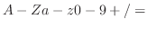
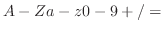

A symbols is assured to be unique if it is interned in a package.
The uniqueness is tested by symbol's print-names.
There are no duplicated symbols in a package which have the same print-name
as other symbols in the package.
When EusLisp is running, there always is a special package called
the current package, which is referred by lisp:*package*.
When a symbol without a package name is read by the reader,
the current package is searched for to locate the symbol with the same
print-name.
If no such symbol is found, search is continued in the packages listed
in the package use list of the current package.
If still no such symbol is found,
a new symbol object with the designated print-name is created
and is interned in the current package.
The package can be specified by prefixing the package name followd by a colon(:).
If a symbol name is preceeded by a package name, the search begins
in the designated package.
Every symbol may have at most one home package.
If a symbol has no such home package, it is said to be an uninterned symbol.
Uninterned symbols can be created by the gensym or make-symbol
function, and they are prefixed by "#:" when printed.
Since these symbols are not interned, two such symbols with the
same print-name are not guaranteed to be equal.
Usually, when the lisp reader encounters a symbol,
the reader converts the print-name string of the symbol to uppper case.
Thus, for example, if you input (symbol-name 'car),
EusLisp responds "CAR" instead of "car".
Note that (make-symbol "car") returns  car instead of
car or CAR.
If you want the reader to make symbols constituted by lower case letters,
use reader's escapes,
car instead of
car or CAR.
If you want the reader to make symbols constituted by lower case letters,
use reader's escapes,  and .
and .
symbolp object [function]
-
- returns T if object is an
instance of CLASS symbol or its subclasses.
symbol-value symbol [function]
-
-
gets symbol's special value. Lexical (local) variables'
values cannot be retrieved by this function.
symbol-function symbol [function]
-
-
gets symbol's global function definition.
Lexical (local) function cannot be taken by this function.
symbol-package sym [function]
-
-
returns the package where sym is interned.
symbol-name sym [function]
-
-
returns sym's print-name.
Note that symbol-name does not copy the pname string,
whereas string does.
Thus, if you change the string returned by symbol-name,
the symbol becomes inaccessible through normal intern procedure.
symbol-plist sym [function]
-
-
Returns sym's property list (plist).
EusLisp's plist takes the same form as an association list,
which consists of dotted pairs of an attribute name and its value.
This is incompatible with Common Lisp definition which requests a plist
to have linear lists of attribute name and value.
In EusLisp, plist is not the unique facility of symbols.
Any objects instantiated from a class that inherits propertied-object
can have property lists.
To set and retrieve these plists in propertied-objects,
propertied-object-plist macro should be used instead of
symbol-plist.
However, get and putprop work for either object.
boundp symbol [function]
-
-
Checks if symbol has a globally bound value.
Note that symbols used for local and object variables
always have bound value and boundp cannot test the bound state
of these local variables.
fboundp symbol [function]
-
-
Checks if symbol has a globally bound function definition.
makunbound symbol [function]
-
-
symbol is forced to be unbound (to have no special value).
Note that lexical (local) variables always have values assigned and
cannot be makunbounded.
get sym attribute [function]
-
-
retrieves sym's value associated with attribute in its plist.
= (cdr (assoc attribute (symbol-plist sym)))
putprop sym val attribute [function]
-
-
Putprop should be replaced with the combination of setf and get.
remprop sym attr [function]
-
-
removes attribute-value pair from sym's property list.
setq {var value}* [special]
-
-
assigns value to var which is either a symbol or a dotted-pair.
Var is searched for in the name spaces of local variables,
object variables, and special variables in this order unless explicitly
declared special.
set sym val [function]
-
-
assigns val to the special value of sym.
Set cannot assign values to local or object
variables.
defun symbol [documentation] lambda-list . body [special]
-
-
defines a global function to symbol.
Use flet or labels for defining local functions.
If no documentation is given, a default documentation string
describing the lambda-list is entered.
defmacro symbol [documentation] lambda-list . body [special]
-
-
defines a global macro.
EusLisp does not have facilities for defining locally scoped macros.
defvar var &optional (init nil) doc [macro]
-
-
If var symbol has any special value, defvar does nothing.
If var is unbound, it is declared to be special and
init is set to its value.
defparameter var init &optional doc [macro]
-
-
defparameter declares var to be special and
init is set to its value,
even if var already has value.
defconstant sym val &optional doc [macro]
-
-
defconstant sets val as sym's special value.
Unlike defvar, defparameter and setq, the value set by
defconstant cannot be altered by these forms.
If the value of a constant symbol is tried to be changed,
an error is reported.
However, another defconstant can override the previous
constant value, issuing a warning message.
keywordp obj [function]
-
-
T if obj is a symbol and its home package is KEYWORD.
constantp symbol [function]
-
-
T if the symbol is declared to be constant with defconstant macro.
documentation sym &optional type [function]
-
-
retrieves documentation string of sym.
gensym &optional x [function]
-
-
creates a new uninterned symbol composed of a prefix string and a suffix
number like g001.
Uninterned symbols are denoted by the #: package prefix indicating
no package is associated with the symbols.
Symbols with #: prefix are unreadable symbols and
the reader cannot create references to these uninterned symbols.
X can either be a string or an integer,
which is used as the prefix or the suffix.
gentemp &optional (prefix "T") (pkg *package*) [function]
-
-
creates a new symbol interned in pkg.
In most applications, gensym is preferable to gentemp, because
creation of uninterned symbols is faster and uninterned symbols are
garbage collect-able.
2016-03-23